在部署分布式集群后，每个节点的请求落到的tomcat服务器是不一样的，单体锁不能保证服务的可靠性，因此需要读写分离、分库分表
读多写少如何解决？ –读库写库分别部署
海量数据？ –数据切分（垂直切分、水平切分）
1 数据切分
- 垂直切分
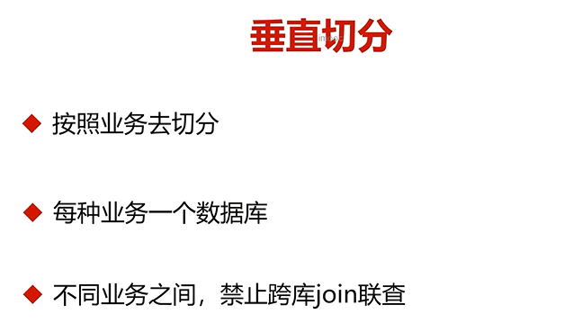
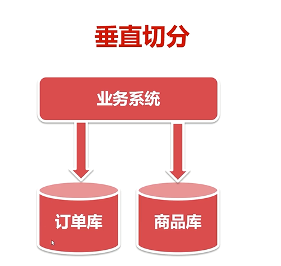
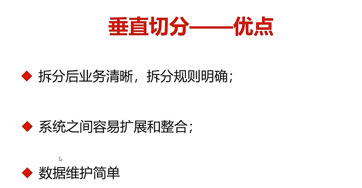
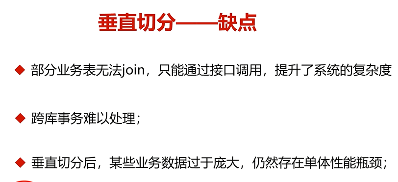
- 跨库消耗性能
- 水平切分
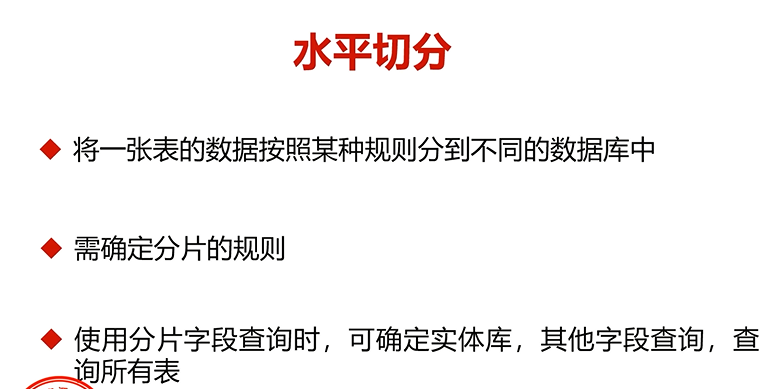
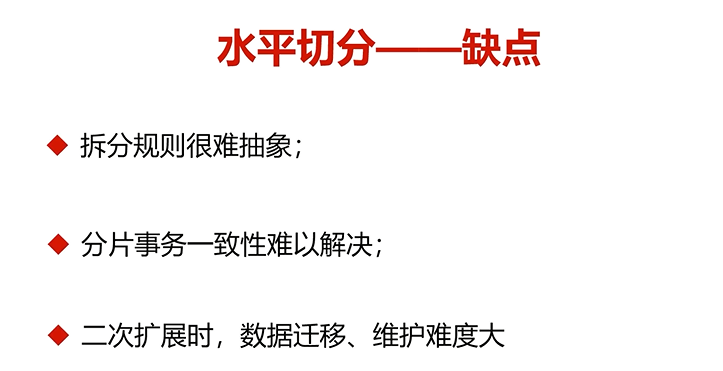
实际中，通常先垂直后水平


2 实现读写分离和数据切分的方式
- 中间代理（MyCat）

- 客户端模式（sharding-jdbc）
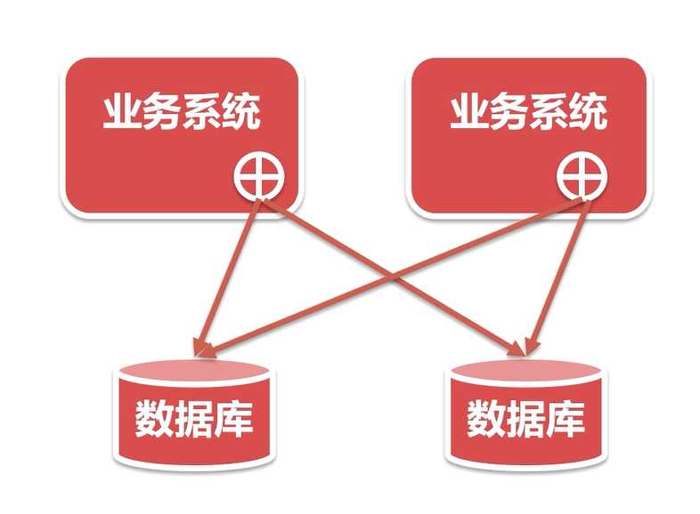
3 MyCat环境搭建
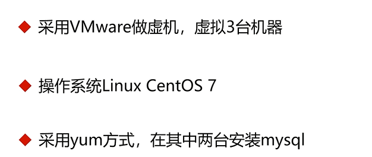
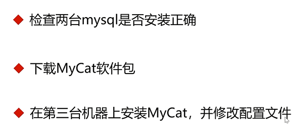


3.1 mysql安装：
- 安装yum仓库 //在官网找对应的步骤，很全面
- 仓库传到131与132虚拟机上 /opt/ //rz命令 可以传文件
yum -y install lrzsz- 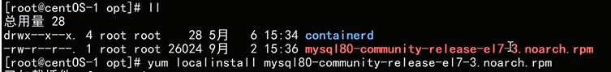
yum install mysql-community--serverservice start mysql启动grep 'temporary password' /var/log/mysqld.log查看临时密码- 登录
- 修改密码
- 创建用户，使用老的加密方式，mysql8使用了新的加密方式，不这么写，不然navicat连不上
- 授权
- 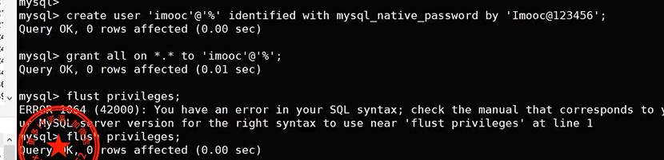

3.2 MyCat安装
- mycat.io官网下载压缩包
- /opt、目录下 rz命令上传
- tar -zxvf 解压
- 修改配置文件
3.2.1 server.xml
- 用户和数据库

3.2.2 schema.xml
- 配置dataHost——dataNode——–schema
- 配置131和132
- 此处的user和server.xml里的也要对应
- 在两个tomcat里创建对应数据库与表，一定要对应
- 这里分片的规则默认为auto-sharding-long 对应了rule.xml里的配置
- 每种规则对应一个映射txt文件，里面包含了分片具体设定


3.2.3 启动
- ./bin/mycat console //打印日志在服务台
- navicat连接
- 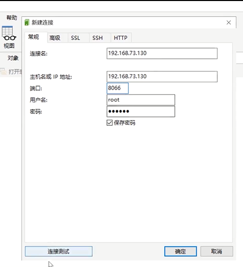
插入一条数据，对应的分片tomcat也会同步数据，分片规则以id为根据，配置详情在>txt文件里。
3.3 server.xml详细配置
- 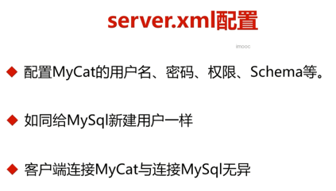
- /opt目录下server.xml，schema标签要和schema.xml里的schema标签相对应
- MyCat使用的也是老的加密方式，
- 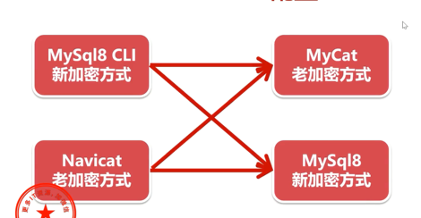
- 使用mysql客户端命令行连接应指定老的加密方式
mysql -uroot -p -P8066 -h127.0.0.1 --default-auth=mysql_native_password这样就可以连接了

3.4 schema.xml详细配置
- dataHost着重看两个参数 writeType与balance
- sqlMaxLimit：可以进行限制条数
- 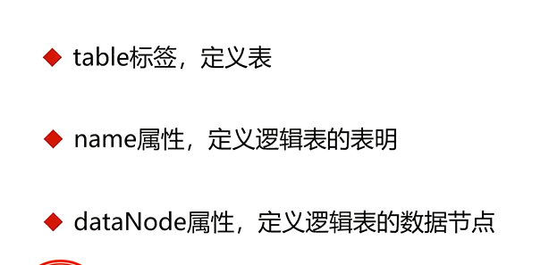
mycat启动有两个端口，8066和9066，都可以用navicat进行连接，可以在9066端口里show @@helpreload @@config可以在配置文件更改后不重启服务的情况下进行配置更新


3.5 rule.xml详细配置
- 配置分片规则tablerule标签对应了分片规则，function标签 对应了txt文件
- txt文件中可以进行分片的具体设定
- mycat的分片规则可以在文档中查看，比如：分片枚举，可以根据固定的值进行分库
- 以分片枚举为例：
- 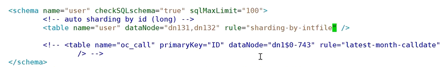
- 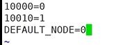
- mycat添加字段，修改会同步到所有子节点上。
- 根据province_id进行分片,根据枚举值进行分片，非枚举值插入默认节点
- 每次改配置文件后要在9066端口进行reload @@config
- 取模规则（常用）


4 Mycat配置实操
4.1 mycat层面读写分离
- 读写分离配置，主从的数据库名称也要一致。读和写
- 这里的配置不涉及同步，同步后面讲解
- 如果修改的是数据源，要在9066端口
reload @@config_all，此操作较慢- 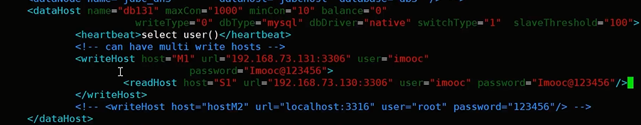
- 分别测试balance为0（只在写库）、1（读请求进行读写库切换，主要针对双主双从，主互为主备的情况，这种况M2.S1.S2会参与负载均衡，M1不会）、2（所有读操作随机分配在读库和写库上）、3（所有读请求分配到读库上，写库不会有读请求压力）
- 测试writeType 分别为0（默认为0，表示插入操作时插入在第一个写库，如果此库挂了
system stop mysqld，则插入顺序往下的第一个写库,重新启动后的写库排在队列末尾）、1（）
4.2 mysql层面读写分离
4.2.1
- 这里的主从配置可以实现数据同步
- 主
vim /etc/my.cnf- 配置log-bin与server-id
- 从
- 配置server-id
- service restart mysql

4.2.2
- 主创建授权账号——开启mysql——创建用户（用默认加密方式就可）—授权
- 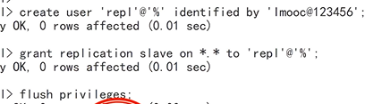
- 主进行锁表(此时向主插入会失败，卡住)
flush tables with read lock;- 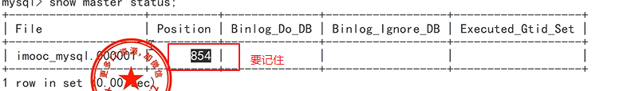记住文件名称和位置
- dump文件复制到从机，使用scp命令
- 从机
scp root@192.168.73.131:~/dbdump.db .在输入机器密码即可复制到当前目录- 从机
mysql < dbdump.db -uroot -p- 主
unlock tables

4.2.3
- 从机中配置主机，在mysql中
，
- 输入主机ip，主从同步的用户user，密码，文件名，位置,内容单引号包裹
start slave;这样配置后，mysql的主从便搭建好了，通过MyCat层面和mysql层面的配置，便可实现同步的读写分离
5 全局表与子表
5.1 全局表
比如一些不变的东西，省市区之类的数据经常会用来关联查询，所以常设置为全局表

5.2 子表
比如订单使用order_id取模，订单详情与商品信息也进行分片，想查询一个订单的所有信息，有可能因所在主机不同而不成功。跨库操作。这样的话就需要子表，保证两者在一个主机上。
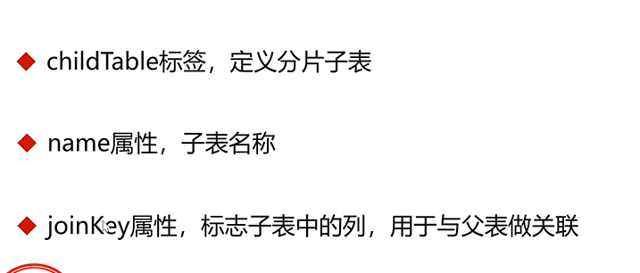
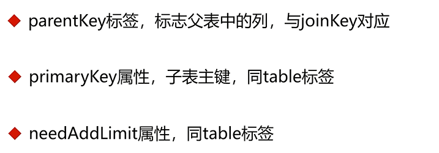
- 建库建表
- 这样子表会对应父表进行分片，防止跨库操作。

6 MyCat的HA
6.1 原理
- 保证一个节点挂了也不影响使用
- 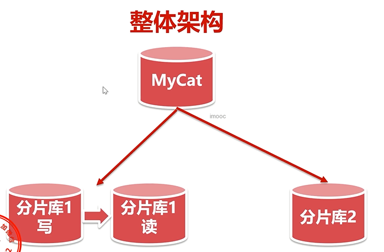
- 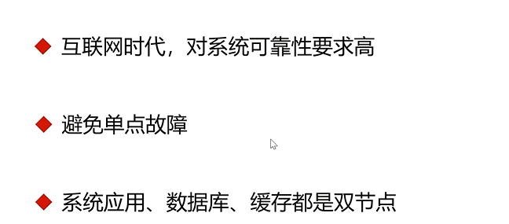
- 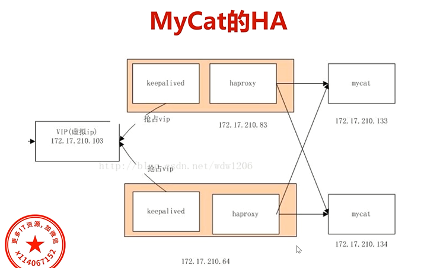
- Haproxy用作负载均衡，区别于Nginx（基于http请求），haproxy为tcp层的代理
- keepalived设置双主热备，通过虚拟ip进行访问
6.2 实现步骤
6.2.1 Haproxy的负载均衡实现
- 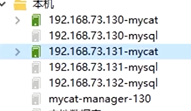
- 三台mysql，一台mycat
scp -r root@192.168.73.130:/opt/mycat复制mycat，将131也设置为mycat，-r为递归- 启动两台主机的mycat
- 在132主机安装haproxy，
yum serach haproxy——-yum -y install haproxy- 配置haproxy配置文件
vim /etc/haproxy/haproxy.cfg- mode改为tcp
- 关注端口5000
- 默认走backend app
-负载均衡策略
- server:名字，ip，端口
haproxy -f /etc/haproxy/haproxy.cfg启动- 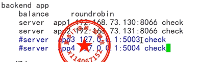
- navicat中连接haproxy，密码为mycat的密码，可成功登录。
到此完成负载均衡
6.2.2 keepalived部署
- 130主机
yum install -y haproxy- 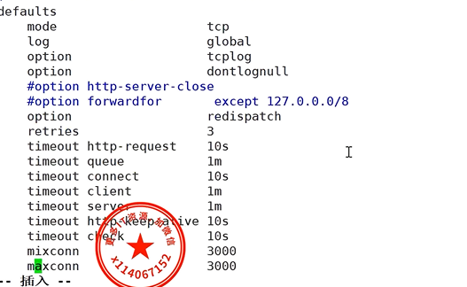
此时主机130、132部署haproxy，全都做了负载均衡，映射130与131上的8066端口，即mycat，两台mycat配置相同，即具有相同的读写库设置与分片原理
yum search keepalived进行搜索；yum install -y keepalived进行安装vim /etc/keepalived/keepalived.conf- 进行配置
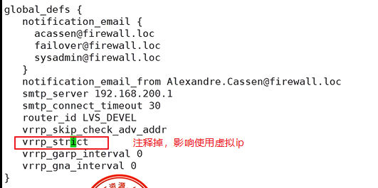
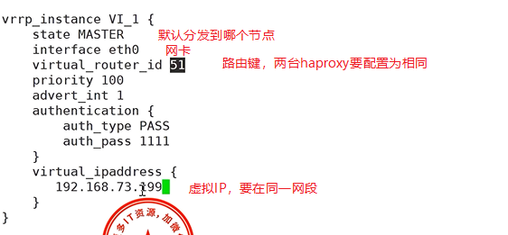
- 要将ssl改为tcp检查
- 一台keepalived对应一台haproxy，因此配置好虚拟ip后，只需要在虚拟ip配置里配置一台real_server
- 同理在132也安装keepalived，conf文件可以直接从130复制
- 两台主机启动keepalived
keepalived -f /etc/keepalived/keepalived.confps -ef|grep keepalived查看进程- 此时使用ip addr便可查看到，130的ens33网卡对应两个ip，一个是自身的130，一个是keepalived的虚拟ip，而132则只有一个
- navicat 连接虚拟ip，密码为mycat密码，端口为自己设定的端口，访问成功！
- 当130的keepalived挂掉之后，132则会开启，网卡中的映射增加一个虚拟ip；130重新开启后，虚拟ip也依然绑定的是132，不会变动
- 但当把132的haproxy 关闭后，keepalived并没有切换。出问题了！！！
- 解决：
- conf文件中删掉对应的tcp_check，这玩意没起作用
- 写一个vrrp_script chk_haproxy{}
kill -0 haproxy如果haproxy正常返回0，宕机返回1（返回值可用echo $?进行查看）- 没有此命令的话
yum search killall—–yum install psmisc.x86_64- 大括号前要加空格，注意。。
至此，haproxy的负载均衡与keepalived的双主热备就介绍完了
mycat部分也告一段落


- 一致性哈希
- 对于一般电商项目，期待的是每个用户下单，能快速地根据相关表进行查询，并且在统计所有订单时可以轻松的在同一主机上获取，这种情况最好根据用户id进行分片，使用一致性哈希规则。并且为订单表配置相关子表，便于条件查询
- 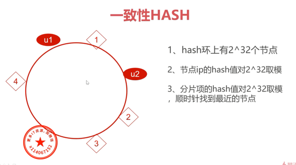
- 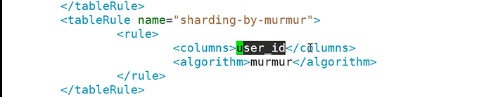

有喜欢的小伙伴可以多多分享哦
欢迎打赏！！！
本系列均为原创，如有引用请注明出处，如以本内容获取盈利，本人有法律权益进行相关维权！！